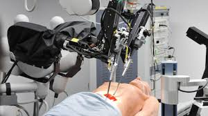

دور الذكاء الاصطناعي في مجال الطب

يمكن للأدوات المدعمة بالذكاء الاصطناعي تحديد العلاقات ذات المغزى في البيانات الأولية وهي تنطوي على امكانية التطبيق في كل مجال من مجالات الطب تقريبا، بما في ذلك تطوير الأدوية وقرارات العلاج ورعاية المرضى والقرارات المالية والتشغيلية.
باستخدام الذكاء الاصطناعي، يمكن لمتخصصي الرعاية الصحية معالجة المشكلات المعقدة التي يصعب معالجتها بمفردهم أو التي تتطلب الكثير من الوقت. ويمكن أن يكون الذكاء الاصطناعي موردا قيما للمتخصصين الطبيين، مما يسمح لهم باستخدام خبراتهم بشكل أفضل وتقديم قيمة عبر النظام البيئي الصحي.